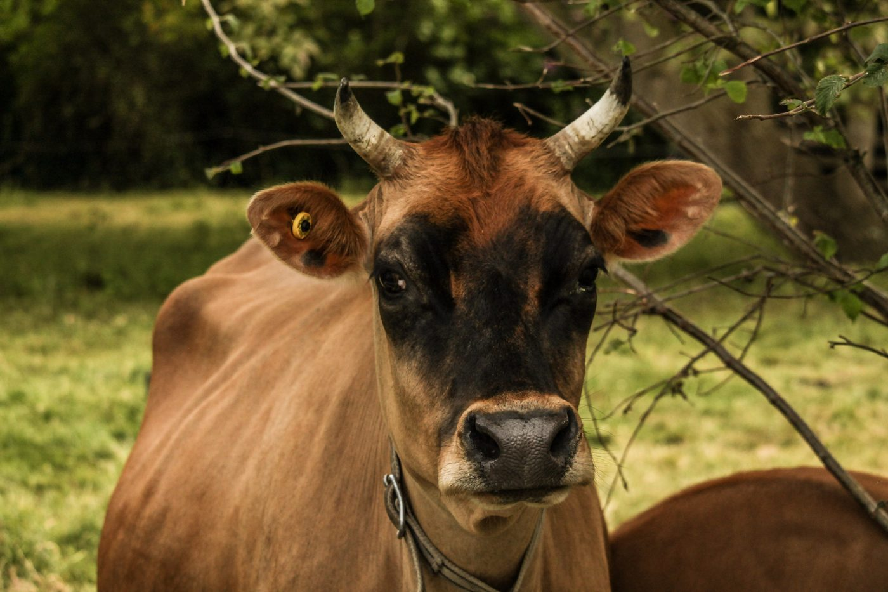
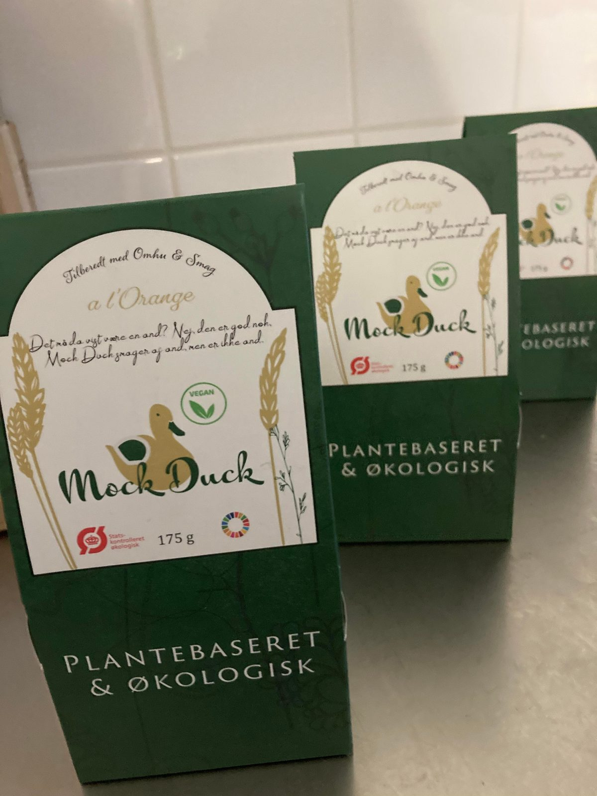

Fortid
Hvor vi kom fra
Fra 2013 til 2023 var Stålbækgård et alsidigt landbrug med dyr, en restaurant og egne kødprodukter. Det er ikke sådan, gården ser ud i dag — men det er en ægte del af historien.

Dyrene
Køerne, grisene, høns og ænder — og de øvrige dyr på gården, 2013–2023.
Læs mere →
Restaurant
Benji's Burger & Duck'n Fries — gårdens take-away gennem mange år.
Læs mere →
Gamle produkter
Hindsholm Beef og Mock Duck — produktlinjerne der blev udviklet, mens gården stadig havde dyr.
Læs mere →